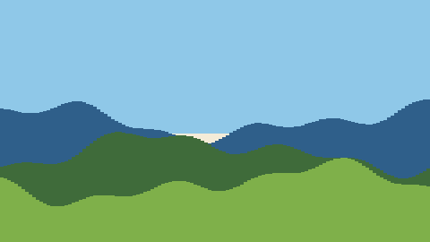
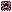
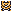
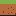
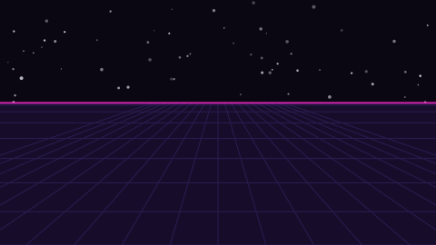
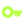
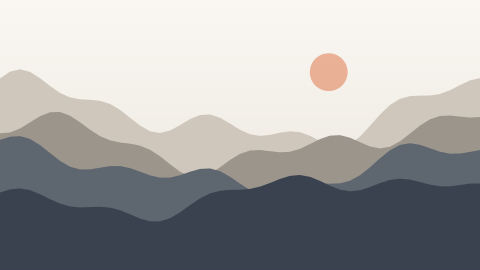
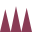

Chunky 12-color raster art at integer scale, stepped animation and snappy pixel-snapped camera.




camera snap · motion steps(4) @ 8 fps · feedback square/tint
Glowing geometric vector shapes on a near-black field, additive feedback and fast easing.


camera locked · motion cubic-out @ 60 fps · feedback spark/additive
Muted layered silhouettes with atmospheric depth, soft shapes and slow damped motion.


camera damped · motion sine-in-out @ 30 fps · feedback soft-dot/none